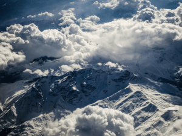
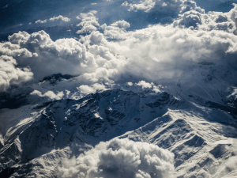

Путешествия по России
Настоящая страна не в выпусках
новостей, а здесь.
ваша полка — верхняя
Чего мы там не видели?
По опросам ВЦИОМ, 95% россиян мечтают куда-нибудь поехать, но только 36% планируют
провести отпуск в
родной стране. Мол, чего мы тут, дома, не видели? На самом деле, Россия — это целая вселенная с ласковым
морем юга, густыми лесами Саян и суровыми льдами плато Путорана. А ещё увидеть все эти красоты можно без
миллионов на счету, загранпаспорта и многочасовых перелетов. Как, например, Вера Башмакова — смелая
молодая мама, которая взяла в охапку троих детей, усадила их в свою «Ладу» и проехала 20 тысяч
километров по родной стране. Мы выбрали и описали некоторые интересные места, достойные вашего отпуска.
- Часовых поясов 11
- Объектов природного наследия ЮНЕСКО 12
- Объектов культурного наследия ЮНЕСКО 16
- Природных заповедников 105
- Аэропортов 241
Здесь, посреди лесов и песчаных дюн, вы сможете увидеть два водных
горизонта
— спокойного Куршского
залива с одной стороны
и подёрнутого рябью волн Балтийского моря
с другой. Уникальная природная зона на краю российского анклава.
На этом Калининградская область не заканчивается. Для
путешественника
и исследователя там же по соседству — самая западная точка России, Балтийская коса, —
и немецкое наследие россыпи небольших приморских городов. Атмосфера здешних мест исключает
суету,
окуная в спокойствие природы
и запах стального, прохладного моря.
Почти весь полуостров находится за Полярным кругом. Саамская
тундра, от
которой на юг —
тайга, а на север — Ледовитый океан, прикидывающийся Баренцевым морем.
Возможно, вы смотрели Звягинцева и даже слышали историю
арктического
фестиваля
в Териберке. Возможно, слово «Хибины» не осталось под снегом школьных воспоминаний
об уроках географии. Возможно, вы не интересовались пронизывающей земную кору сверхглубокой
скважиной, а от апатитов вас давно накрывает апатия. Но ваша мечта увидеть северное сияние
начинает
сбываться с билетом
в Мурманск.
Алтай — одно из красивейших мест в России.
В первую очередь из-за гор: если ехать вдоль хребта, вы увидите склоны, усыпанные соснами,
горные
реки и озёра. А если вы откроете
в автомобиле окна, сможете познакомиться
с невидимым чудом здешних мест — горным воздухом.
Климат на Алтае умеренный, поэтому ехать сюда лучше всего летом.
Так вы
увидите всё разнообразие
местной флоры и фауны. По лесам Алтая бродят лоси, над хребтами летают орлы,
а на равнинах пасутся косули. И знаменитые манулы — тоже обитатели Алтайского края.
Всем известен Байкал как крупнейшее озеро
в мире. Многие также знают, что это самый большой источник пресной воды и одно
из красивейших мест в России.
Конечно, это всё так. Но Байкал ещё идеальное место
для соревнований по
скийорингу. Это такой вид
спорта, когда лыжник привязывает себя к мотоциклу, и тандем старается развить как можно
бóльшую
скорость на льду. В марте 2019 года на фестивале «Байкальская миля» был поставлен мировой
рекорд
—
197.011 км/ч.

Сибирь заканчивается не на Урале, а в Карелии: образующая тайгу
сибирская
лиственница не растёт
западнее Водлозера. Зато здесь она вымахивает на 30 метров — леса карельских национальных
парков
из-за непроходимых болот никогда не знали топора. Некоторым соснам уже больше чем
полтысячелетия.
Прикоснитесь к живому существу, видевшему солнце раньше, чем увидал его Иван Грозный. В
девственном
лесу на сотню километров не встретишь тропы. А на редких тропинках деревья в паре метров от
земли
помечены медвежьими когтями. Чтобы все знали, кто тут хозяин.
 
